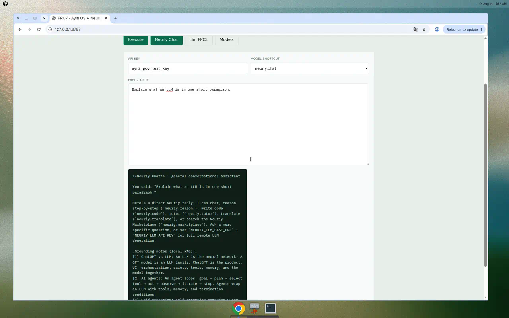
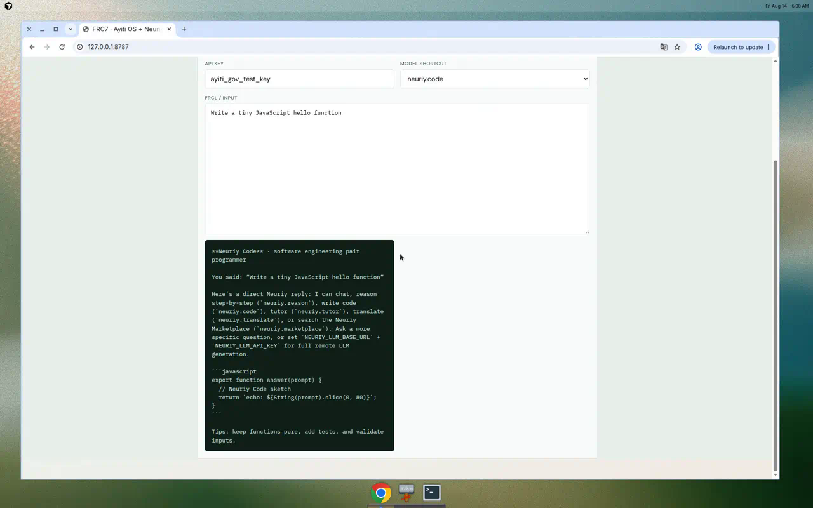
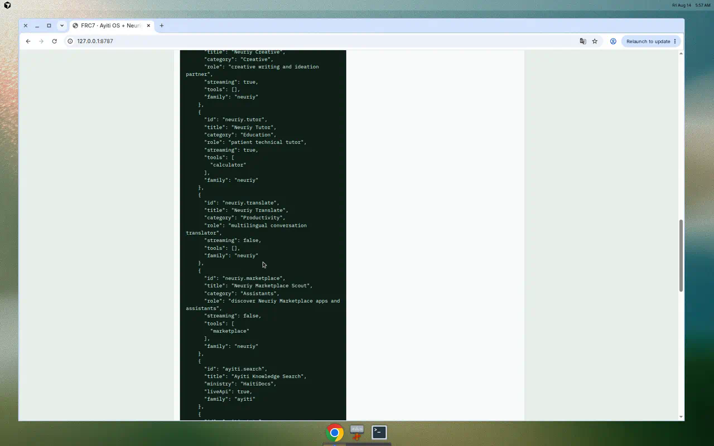

FRC7 · Neuriy AI
Updated demo gallery — ChatGPT-style Neuriy models + Ayiti OS GoV. Photos from the FRC7.2 control panel.
Open GitHub repo · GitHub Pages




Updated demo gallery — ChatGPT-style Neuriy models + Ayiti OS GoV. Photos from the FRC7.2 control panel.
Open GitHub repo · GitHub Pages


